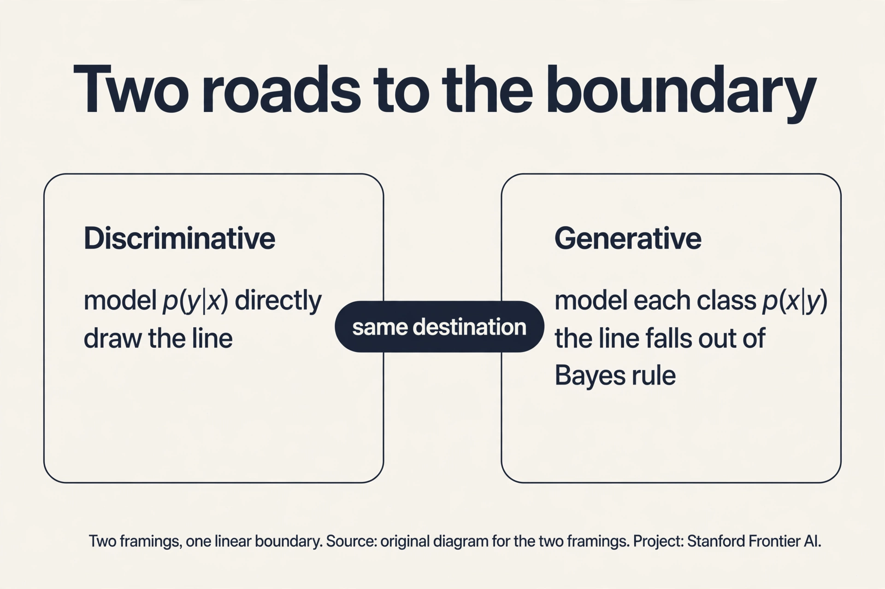
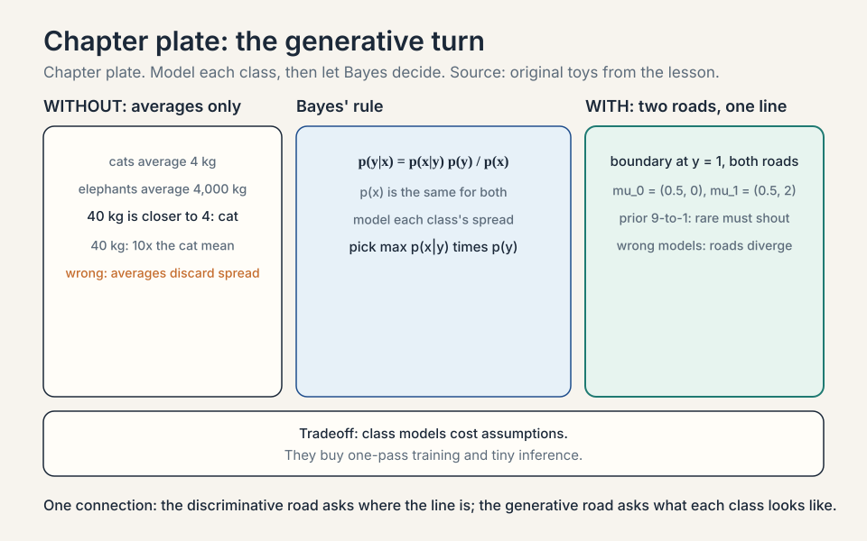
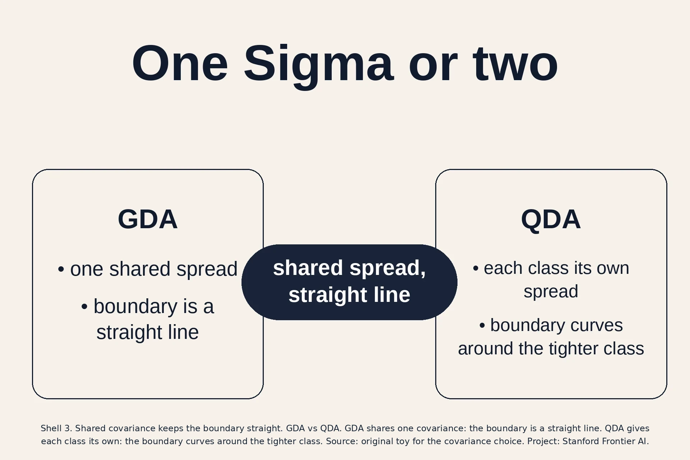
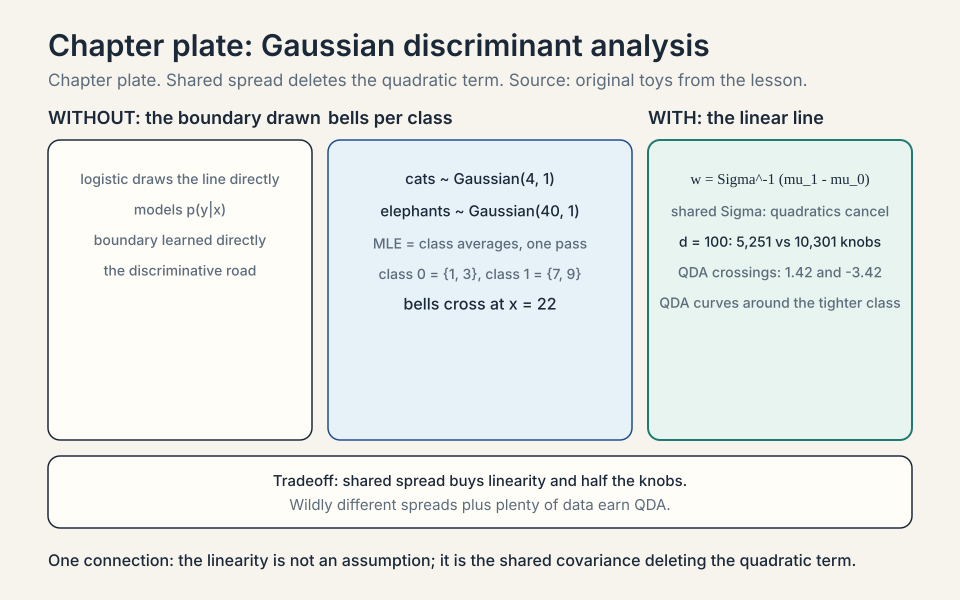
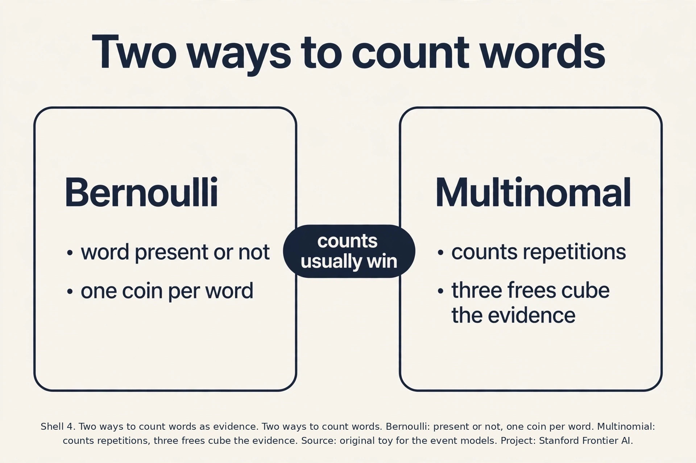
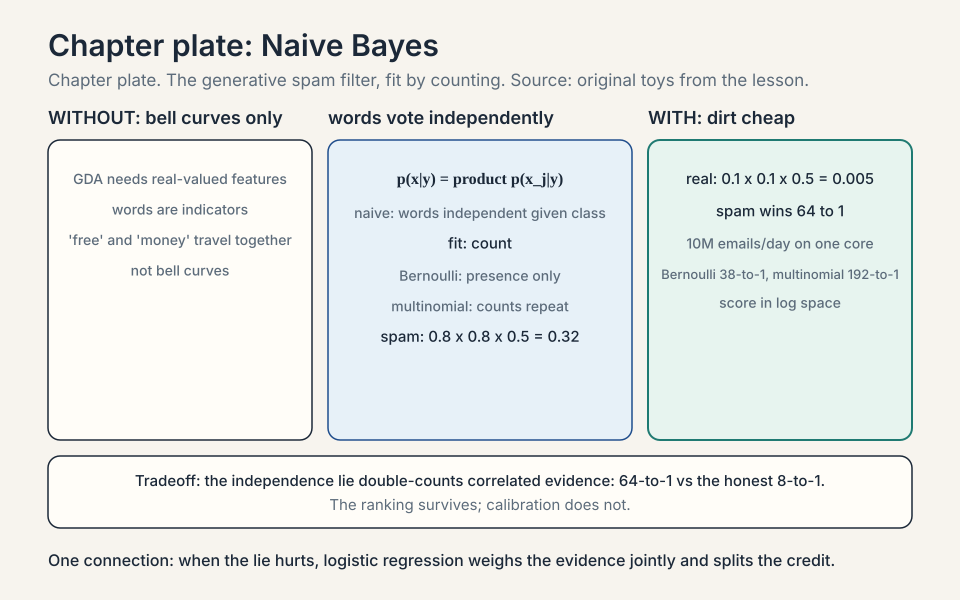
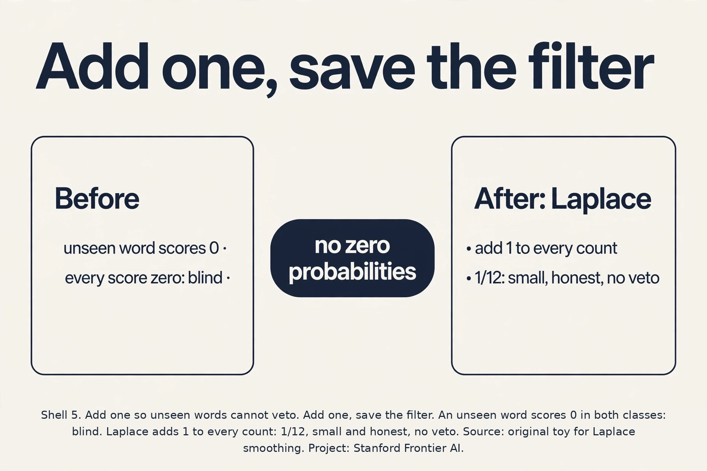
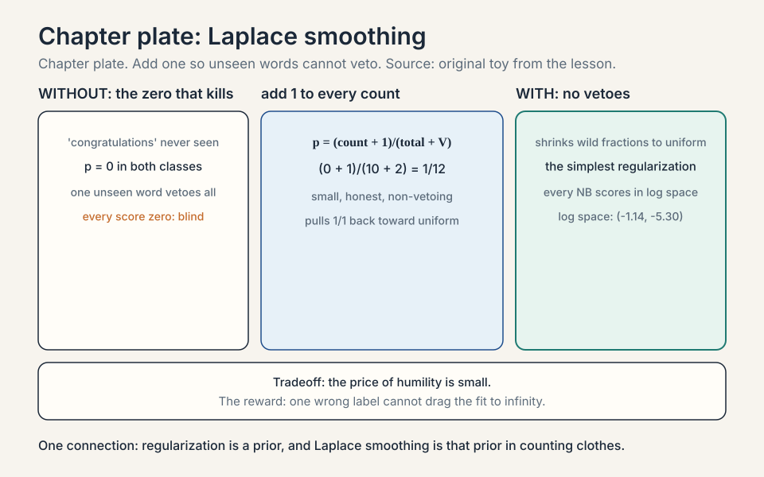

Lecture 5: Generative Models, GDA and Naive Bayes
Video blocked (ad-blocker or local file mode).
Watch on YouTubeVideo not loading? Watch on YouTube
Original lecture. Chris Ré introduces generative models with GDA, then builds a Naive Bayes spam filter.
The job: a cat or a small elephant
A new animal arrives at the shelter. It weighs 40 kilograms. Is it a very large cat or a very small elephant? You have records: 100 cats with their weights, 100 elephants with theirs. The lecture’s running toy uses exactly this: two species, one feature, weight.
Logistic regression would draw a boundary directly: find the line that best separates cats from elephants. That is the discriminative approach: model p(y|x), the probability of the class given the features, and learn the boundary. Every model so far in this course was discriminative.
But there is another way to use the records. Model each species on its own: the distribution of cat weights, and the distribution of elephant weights. A 40 kg animal is a plausible small elephant and an implausible giant cat, so call it an elephant. This is the generative approach: model p(x|y), the distribution of features inside each class, plus p(y), how common each class is. Then use Bayes’ rule to flip it around:
p(y | x) = p(x | y) * p(y) / p(x)
Read it: the probability it is an elephant given 40 kg equals how likely 40 kg is for elephants, times how common elephants are, divided by how likely 40 kg is overall. The denominator p(x) is the same for both species, so the decision is: pick the class with the bigger p(x|y) * p(y).
Subchapter: LDA, the other name
GDA with shared covariance (how the features vary together, the shape of the spread) has a second name: LDA, linear discriminant analysis. Same model, same linear boundary, older name (Fisher, 1936). Interviewers use both. “LDA” usually means the shared-covariance Gaussian classifier. “QDA” means the separate-covariance version. “GDA” is the course’s name for the shared version. Three names, two models: LDA = GDA (linear), QDA (quadratic).
The naming trap: “discriminant analysis” sounds discriminative, but LDA/GDA are generative: they model p(x|y), not the boundary. Fisher’s original LDA was derived differently (maximizing the ratio of between-class to within-class scatter), but the Gaussian shared-covariance model gives the same linear boundary. When a job posting says “LDA,” read GDA.
Subchapter: one dataset, two roads
Run both roads on one toy. Class 0: (0,0), (1,0). Class 1: (0,2), (1,2). Discriminative road: draw the boundary directly. The classes separate cleanly at y = 1. A logistic fit puts the line there.
Generative road: model each class. mu_0 = (0.5, 0), mu_1 = (0.5, 2), shared Sigma = small. The bells cross at the midpoint: y = 1. Same line. The discriminative road asked “where is the dividing line”. The generative road asked “what does each class look like” and the line fell out. Two framings, one boundary. The roads diverge when the class models are wrong: then the discriminative line still fits the boundary, while the generative line inherits the class models’ mistakes.

First attempt: compare the averages
The naive idea: compute the average cat weight and the average elephant weight, and pick whichever average the new animal is closest to. Toy numbers: cats average 4 kg, elephants average 4,000 kg. A 40 kg animal is closer to 4 than to 4,000, so call it a cat. Wrong, and obviously wrong: 40 kg is 10 times the cat average but a perfectly ordinary small elephant.
The failure: averages throw away spread. Cat weights cluster tightly around 4 kg. Elephant weights spread widely. Averages-only comparison cannot see that 40 kg sits 36 standard deviations above the cat mean but well inside the elephant range. The fix is to model the full distribution of each class, spread included. That is what generative models do.

Gaussian discriminant analysis
Model each class’s features as a Gaussian (bell curve). For the toy, one feature: cat weights ~ Gaussian(mean 4, variance 1), elephant weights ~ Gaussian(mean 4000, variance 40000). A new animal weighing x gets two scores: the bell-curve height at x for cats, and for elephants. Multiply each by the class frequency p(y). Pick the bigger.
Fit by MLE, and the estimates are embarrassingly simple: the mean is the average of the class’s examples, the variance is the average squared deviation, and p(y) is the class fraction. Closed form, one pass over the data. The lecture stresses this: GDA is dirt cheap to train.
Subchapter: GDA’s MLE, proved
The proof is one line per parameter: maximize the joint log likelihood sum log p(x^(i)|y^(i)) + log p(y^(i)). The class fraction phi separates: derivative gives phi_hat = (number of class-1 examples)/m. The means separate per class: mu_0_hat is the average of class 0’s examples, mu_1_hat the average of class 1’s. The shared covariance pools both classes’ squared deviations: Sigma_hat = (1/m) sum (x^(i) - mu_{y^(i)})(x^(i) - mu_{y^(i)})^T.
Work it on class 0 = {1, 3}, class 1 = {7, 9}. mu_0 = 2, mu_1 = 8, phi = 0.5. Squared deviations: (1-2)^2 + (3-2)^2 + (7-8)^2 + (9-8)^2 = 4, over 4 examples: Sigma = 1. Four numbers, one pass, done. No iterations, no learning rate, no initialization. This is what “dirt cheap” means: the fit is arithmetic, not optimization.
In two dimensions the Gaussian needs a covariance matrix Sigma: it describes spread in each direction and how features vary together. GDA (Gaussian discriminant analysis) models p(x|y=0) and p(x|y=1) as Gaussians with different means mu_0, mu_1 but a shared covariance Sigma. Why shared? With one shared Sigma, the quadratic terms in the two bell curves cancel when you compare them, and the decision boundary becomes a straight line. The lecture’s demo shows two elliptical clouds and the line between them: classify by which side of the line a point falls on.
Work the boundary on a toy. One feature, cats ~ Gaussian(4, 1), elephants ~ Gaussian(40, 1), equal class frequencies. A new animal weighs x. Compare the two densities: the decision flips where they are equal. With equal variances, that is the midpoint: x = 22. Below 22, the cat bell is taller. Above, the elephant bell. The boundary is one number. In d dimensions with shared Sigma, the same algebra gives a linear boundary: w^T x + b = 0, with w = Sigma^-1 (mu_1 - mu_0). GDA, the generative model, produces a linear classifier, the same shape as logistic regression’s. Different road, same destination.
Subchapter: the quadratic that cancels, step by step
See exactly where linearity comes from. Decide by comparing log p(x|y=1) p(y=1) against log p(x|y=0) p(y=0). Each Gaussian log-density is -(1/2)(x - mu)^T Sigma^-1 (x - mu) plus constants. Expand: -(1/2) x^T Sigma^-1 x + mu^T Sigma^-1 x - (1/2) mu^T Sigma^-1 mu. The first term, -(1/2) x^T Sigma^-1 x, is identical for both classes because Sigma is shared. In the difference, it cancels.
What survives is linear in x: (mu_1 - mu_0)^T Sigma^-1 x, plus the constant -(1/2) mu_1^T Sigma^-1 mu_1 + (1/2) mu_0^T Sigma^-1 mu_0 + log(phi/(1-phi)). The decision is w^T x + b > 0 with w = Sigma^-1 (mu_1 - mu_0). The linearity is not an assumption. It is the shared covariance deleting the quadratic term. Give each class its own Sigma and the x^T Sigma^-1 x terms differ: nothing cancels, and the boundary keeps its x^2 terms. That is QDA.

Subchapter: the prior p(y), worked
The p(y) factor is not decoration. Ten thousand emails: 9,000 real, 1,000 spam. p(spam) = 0.1, p(real) = 0.9. A new email has word scores p(words|spam) = 0.05 and p(words|real) = 0.008. The likelihood favors spam 6 to 1. Multiply by the priors: spam gets 0.05 x 0.1 = 0.005, real gets 0.008 x 0.9 = 0.0072. Real wins.
The rare class must shout louder to win: its likelihood advantage has to beat the 9-to-1 prior handicap. This is correct behavior when the priors match deployment: most mail is real. It is a trap when they do not: train on 50/50 lab data, deploy on 99/1 real traffic, and the prior misleads every decision. The fix is to set p(y) from deployment frequencies, not training frequencies, or to tune the decision threshold on a validation set afterward.
Subchapter: QDA, the quadratic sibling
GDA shares one covariance across classes. Drop that and each class gets its own Sigma. The model is now QDA (quadratic discriminant analysis). The quadratic terms no longer cancel, so the boundary curves: it bends around the tighter class like a fence around a small yard.
Count the price. In d = 2, GDA fits 2 means (4 numbers), 1 Sigma (3 numbers), and the class fraction: 8 knobs. QDA fits 2 means and 2 Sigmas: 11 knobs. In d = 100, GDA needs about 5,251 knobs and QDA about 10,301. Double the knobs, double the data needed to fit them without overfitting. The decision rule: shared spread, use GDA. Wildly different spreads and plenty of data, QDA earns its keep.
Subchapter: QDA decision, worked
Watch the quadratic boundary appear in one dimension. Class 0 ~ Gaussian(0, 1), class 1 ~ Gaussian(3, 4) (standard deviation 2), equal priors. Set the densities equal: (1/sqrt(2 pi)) exp(-x^2/2) = (1/sqrt(8 pi)) exp(-(x-3)^2/8). Take logs and simplify: x^2/2 - (x-3)^2/8 = log 2 = 0.693. Multiply by 8: 4x^2 - (x^2 - 6x + 9) = 5.545. So 3x^2 + 6x - 14.545 = 0, giving x = 1.42 or x = -3.42.
Two crossing points: the boundary is quadratic, not a single number. Class 0, the tighter bell, wins the middle interval (-3.42, 1.42). Class 1, the wider bell, wins both tails: its fat tails beat the tight bell far from both centers. The picture is the fence around the small yard from the QDA subchapter, now with coordinates. GDA would have drawn one line and missed the tails entirely.


The key question
GDA needs real-valued features and bell curves. What about the spam filter from lecture 1, where the features are words: does the email contain “free”? does it contain “meeting”? Words are not bell curves. Can the generative idea survive discrete features?
Naive Bayes: the generative spam filter
Yes. Keep the generative frame, change the distribution. Represent each email as a vector of word indicators: x_j = 1 if word j appears. Model p(x|y) with the naive assumption: given the class, each word appears independently of the others. “Naive” because it is false: “free” and “money” travel together in spam. The model ignores that.
Under independence, p(x|y) factors into a product over words: p(x_1|y) * p(x_2|y) * … . Each factor is one coin flip: how often word j appears in class y’s mail. Fit by MLE: count. The probability that “free” appears in spam is (spam emails containing “free”) / (all spam emails). One pass over the corpus. The lecture’s verdict: dirt cheap to train, surprisingly accurate, dirt cheap at inference too: look up the word probabilities, multiply (or add the logs), pick the bigger class.
Subchapter: when independence fails badly, worked
The lie has a worst case: perfectly correlated features. Two features, x_1 and x_2, where x_2 = x_1 always (a duplicated column). Spam: x_1 = 1 in 80% of spam. Real: x_1 = 1 in 10% of real. Naive Bayes counts the evidence twice: spam score gets 0.8 x 0.8 = 0.64, real gets 0.1 x 0.1 = 0.01. The likelihood ratio is 64 to 1. The honest ratio, counting the evidence once, is 8 to 1. The model is 8 times overconfident.
With ten duplicated columns the ratio becomes 8^10: astronomical overconfidence from one real signal. The ranking usually survives (spam still wins), but the probabilities are fiction. The fixes in order: drop duplicated features, or move to logistic regression, which weighs the evidence jointly and splits the credit. The interview line: “Naive Bayes double-counts correlated evidence. The argmax (the class with the highest score) survives, the calibration does not.”
Work a toy. Vocabulary: {free, meeting}. Training: 10 spam, 10 real. “free” appears in 8 spam, 1 real. “meeting” appears in 2 spam, 9 real. New email contains “free” but not “meeting”. Score spam: p(free|spam) * p(no meeting|spam) * p(spam) = 0.8 * 0.8 * 0.5 = 0.32. Score real: 0.1 * 0.1 * 0.5 = 0.005. Spam wins by 64 to 1. The logs make it addition: log scores add per word, which is how implementations do it.
Subchapter: two ways to count words
The lesson’s Naive Bayes is the multivariate Bernoulli model: each word is present or not, one coin per word. There is a second event model: the multinomial. It counts repetitions. An email with “free” three times contributes p(free|spam) once under Bernoulli and p(free|spam)^3 under multinomial.
The multinomial usually wins on long documents, where repetition carries signal: three “free”s is stronger evidence than one. The Bernoulli model can win on short texts, where presence is all there is. Scikit-learn ships both: BernoulliNB and MultinomialNB. The decision rule: short texts, try Bernoulli. Long documents, start multinomial.
Subchapter: the multinomial event model, worked
Score the document “free free money” under both models. Vocabulary: {free, money, meeting}. Spam word probabilities: p(free|spam) = 0.4, p(money|spam) = 0.3, p(meeting|spam) = 0.05. Real: p(free|real) = 0.05, p(money|real) = 0.1, p(meeting|real) = 0.4. Equal priors.
Bernoulli (presence only): spam score = 0.4 x 0.3 x (1-0.05) = 0.114. Real score = 0.05 x 0.1 x (1-0.4) = 0.003. Ratio: 38 to 1. The second “free” changed nothing: presence is binary.
Multinomial (counts): spam score = 0.4^2 x 0.3 = 0.048. Real score = 0.05^2 x 0.1 = 0.00025. Ratio: 192 to 1. The repeated “free” squared its evidence: 0.4^2 vs 0.05^2. On long documents this compounding is the signal. On a three-word text it is mostly the same verdict, louder. The lecture’s guidance: the event model is a modeling choice about what repetitions mean, not a detail.


Where it breaks: the zero that kills
Now the failure the lecture spotlights. A new email contains the word “congratulations”. It never appeared in the 20 training emails. MLE says p(congratulations|spam) = 0/10 = 0 and p(congratulations|real) = 0/10 = 0. The product for both classes is zero. Every email containing any unseen word scores zero for both classes, and the classifier goes blind. One unseen word vetoes everything else the email says.
The fix is Laplace smoothing: pretend you saw each word once more than you did. Add 1 to every count:
p(word j | class y) = (count of j in y + 1) / (total words in y + vocabulary size)
The toy: p(congratulations|spam) = (0+1)/(10+2) = 1/12 instead of 0. The unseen word now contributes a small, honest probability instead of a veto. The lecture calls this “the magic”: it prevents zero probabilities and shrinks confidence in all estimates, pulling wild fractions like 1/1 back toward uniform. It is the simplest form of regularization, the theme of lecture 6.


Subchapter: the log trick, again
The toy multiplies three numbers. A real email has thousands of words, each with probability far below 1. The product underflows to zero in floating point, exactly the disease the log cured in lecture 3. Implementations add logs: log(0.32) = -1.14, log(0.005) = -5.30. The decision is unchanged (bigger is still better), and no product ever touches zero. Every Naive Bayes implementation scores in log space. Memorize the pair: the toy score was (0.32, 0.005), the log score is (-1.14, -5.30).

The honest price
Generative models buy cheap training and pay in assumptions. GDA assumes each class is Gaussian with shared covariance. Real classes are lumpy, skewed, multimodal. The bell curve is wrong and the line it draws is wrong with it. Naive Bayes assumes words are independent given the class. “Free” and “money” are not independent. The model double-counts correlated evidence and grows overconfident. The lecture is candid: these models are “ad hoc” in their assumptions, and discriminative models usually win on pure accuracy when data is plentiful, because they model the boundary directly instead of modeling each class and hoping the boundary comes out right. What generative models keep: one-pass training, tiny inference cost, and they work when data is scarce, because the strong assumptions squeeze more from fewer examples.
Subchapter: Ng and Jordan, the sample-complexity duel
The small-data claim has a theorem behind it. Ng and Jordan (“On Discriminative vs. Generative Classifiers,” 2001) compared logistic regression against GDA head to head. The result: GDA reaches its asymptotic (higher) error with O(log n) examples, while logistic regression needs O(n) examples to reach its asymptotic (lower) error. With n features, GDA needs on the order of log n samples to get close to its best. Logistic regression needs on the order of n.
At n = 1,000 features: GDA is near its ceiling with tens of examples, logistic regression needs hundreds. But GDA’s ceiling is higher: with infinite data, the discriminative model wins, because it optimizes the boundary directly. The practical duel: data scarce, go generative. Data plentiful, go discriminative. This is the theoretical spine of the lecture’s “dwarfs” remark, and it is why GDA still ships in clinics and cold starts while logistic regression owns the data-rich world.
Mapping back
| Idea | Pain it answers | How |
|---|---|---|
| Generative framing | Discriminative models learn only the boundary | Model p(x|y) and p(y); Bayes’ rule gives p(y|x); full class distributions, not just the dividing line |
| GDA | Averages-only comparison ignores spread | Bell curves per class with shared Sigma; MLE is class averages; boundary is linear: w = Sigma^-1(mu_1 - mu_0) |
| Naive Bayes | GDA needs bell curves; words are discrete | Word indicators with the independence assumption; fit by counting; toy: spam wins 0.32 to 0.005 |
| Laplace smoothing | One unseen word zeroes every score | Add 1 to every count: (0+1)/(10+2) = 1/12; no vetoes, shrunk confidence |
A discriminative model learns p(y|x) directly: given the features, which class? Logistic regression draws the boundary. A generative model learns p(x|y) and p(y): what each class looks like, and how common it is. Then Bayes’ rule flips it into p(y|x) for decisions. GDA models each class as a Gaussian. Naive Bayes models each class as word probabilities. Generative training is usually closed-form counting. Discriminative training is usually iterative optimization. When data is scarce. The strong assumptions (Gaussian classes, independent words) squeeze more signal from few examples. With plentiful data, discriminative models usually win on accuracy because they optimize the boundary directly instead of hoping it falls out of the class models. The lecture notes the discriminative versions “dwarf” the generative ones in modern use, but GDA and Naive Bayes remain the cheap, fast baseline.
Compare the two Gaussian densities at a point x. Each has a quadratic term x^T Sigma^-1 x in the exponent. With one shared Sigma, that term is identical for both classes and cancels in the comparison. What remains is linear in x: w^T x + b with w = Sigma^-1(mu_1 - mu_0). The decision “which bell is taller” becomes “which side of a line”. Give each class its own covariance and the quadratics survive: the boundary becomes quadratic (that model is called QDA). mu_0 is the average of class 0’s examples, mu_1 the average of class 1’s, Sigma the average squared deviation pooled across classes, and p(y=1) the fraction of class-1 examples. All closed form, one pass. No iterations, no learning rate.
Any word unseen in training gets probability 0 in both classes by raw counting. One such word in a new email zeroes the whole product, and classification collapses. Laplace smoothing adds 1 to every word count: p = (count + 1)/(total + V). The unseen word gets 1/(total+V) instead of 0: small, honest, non-vetoing. It also shrinks every estimate toward uniform, taming wild fractions from tiny samples. The lecture calls it the simplest regularization. Almost never, and the model works anyway. Correlated words get double-counted, which inflates confidence but usually preserves the ranking of the classes. When ranking is all you need, the wrong assumption is cheap and fast. When you need calibrated probabilities, it is a real problem.
mu_0 = (1+3)/2 = 2. mu_1 = (7+9)/2 = 8. Pooled variance: squared deviations from own means are (1-2)^2 + (3-2)^2 + (7-8)^2 + (9-8)^2 = 1+1+1+1 = 4, over 4 examples = 1. The densities cross at the midpoint: x = 5. A new animal at x = 6 lands above 5, so class 1. Closed form, one pass, no iterations. The p(y) factor penalizes the rare class: its bell is multiplied by 0.1, the common one by 0.9. The crossing point moves toward class 1’s side, so the rare class claims less territory. Rare classes must shout louder to win.
Multinomial Naive Bayes in log space. Training is one counting pass over the corpus: memory is one float per vocabulary word. Inference per email is a table lookup and an addition per word. Ten million emails a day is 116 a second. NB does that on one core with room to spare. Laplace smoothing is mandatory: unseen words arrive daily. When NB’s accuracy plateaus and you can afford iterative training. Correlated words (“free”, “money”) get double-counted by NB. Logistic regression weighs the evidence jointly. The honest upgrade path: NB first for the baseline and the speed, logistic regression when the baseline is not enough.
GDA wins on small data: closed-form fits squeeze more from few examples because the Gaussian assumption does half the work. Logistic regression wins on big data: it optimizes the boundary directly instead of hoping the boundary falls out of two class models. The classical result (Ng and Jordan): GDA reaches its higher asymptotic error with O(log n) examples, logistic regression needs O(n) to reach its lower one. Small data, generative. Big data, discriminative. No. Small-data regimes are everywhere: medical studies with 200 patients, BCI with 50 trials, any cold-start problem. GDA and its cousin LDA still ship there. Obsolete on ImageNet does not mean obsolete in the clinic.
Classification needs the argmax, not calibrated probabilities. Correlated words get double-counted, which inflates confidence but rarely flips which class wins: the ranking survives the lie. The model is also dirt cheap, so it wins on speed-adjusted accuracy. When the lie hurts: highly correlated features plus a need for honest probabilities, like expected-loss decisions. Then the overconfidence is a real bill. There is not a free one. Calibrated alternatives (logistic regression, Platt scaling on NB scores) cost the joint modeling NB skipped. Speed, accuracy of ranking, calibrated confidence: pick two cheaply, pay for the third.
Coverage map: every lecture claim and where it lives
| Lecture claim | Covered in | File line |
|---|---|---|
| 40 kg animal: giant cat or small elephant | The job: a cat or a small elephant | L31 |
| Bayes’ rule: pick max p(x|y) p(y) | The job: a cat or a small elephant | L31 |
| LDA = GDA (linear); QDA (quadratic); Fisher 1936 | LDA, the other name | L62 |
| One dataset, two roads, same boundary y = 1 | one dataset, two roads | L80 |
| Averages-only comparison fails: ignores spread | First attempt: compare the averages | L98 |
| GDA: per-class Gaussians, shared Sigma | Gaussian discriminant analysis | L114 |
| GDA MLE: class averages, pooled variance, class fraction | GDA’s MLE, proved | L129 |
| Shared Sigma cancels the quadratic term: w = Sigma^-1(mu_1 - mu_0) | the quadratic that cancels, step by step | L166 |
| Prior p(y): rare class must shout louder (0.005 vs 0.0072) | the prior p(y), worked | L186 |
| QDA: own Sigma per class, curved boundary, knob counts | QDA, the quadratic sibling | L202 |
| QDA 1-D worked: crossings at 1.42 and -3.42 | QDA decision, worked | L217 |
| Words are not bell curves: can the idea survive | The key question | L237 |
| Naive Bayes: independence, fit by counting; toy 0.32 vs 0.005 | Naive Bayes: the generative spam filter | L244 |
| Correlated features double-counted: 64-to-1 vs honest 8-to-1 | when independence fails badly, worked | L262 |
| Bernoulli vs multinomial event models | two ways to count words | L288 |
| Multinomial worked: “free free money”, ratio 192 to 1 | the multinomial event model, worked | L303 |
| Unseen word zeroes every score | Where it breaks: the zero that kills | L324 |
| Laplace smoothing: (0+1)/(10+2) = 1/12 | Where it breaks: the zero that kills | L324 |
| Log space: (0.32, 0.005) -> (-1.14, -5.30) | the log trick, again | L352 |
| Ng and Jordan 2001: O(log n) vs O(n) sample complexity | Ng and Jordan, the sample-complexity duel | L379 |
Lecture video zRdE8A4UZes verified real via direct page-title fetch (Lecture 5: Gaussian Discriminant Analysis, Stanford Online). oEmbed 401 = embedding disabled by owner, linked not embedded. Explainer embed O2L2Uv9pdDA verified via oEmbed.
Recap: the whole lesson on one screen
- The job. 40 kg animal: giant cat or small elephant? Model each species, not just the boundary.
- First attempt. Compare averages: 40 is closer to 4 than 4,000, so “cat”. Wrong: averages discard spread.
- The generative turn. Model p(x|y) per class plus p(y). Bayes’ rule decides: pick max p(x|y)p(y).
- GDA. Each class a Gaussian, shared Sigma. MLE = class averages. Boundary where bells cross: linear, w = Sigma^-1(mu_1 - mu_0). Toy: x = 22.
- The key question. Words are not bell curves. Can the idea survive discrete features?
- Naive Bayes. Words independent given the class. Fit by counting. Toy email: spam 0.32 vs real 0.005. Dirt cheap.
- The zero that kills. Unseen word -> probability 0 -> every score zero. Laplace smoothing: add 1 to every count.
- The honest price. Gaussian and independence assumptions are usually false. Discriminative models win on big data. Generative wins on small data and on speed.
- QDA. Each class gets its own Sigma: the boundary curves. d = 100 needs ~10,301 knobs vs GDA’s ~5,251. Different spreads plus plenty of data, or stay linear.
- Two event models. Bernoulli: present or not. Multinomial: counts repetitions. Long documents start multinomial.
- Log space. The toy (0.32, 0.005) becomes (-1.14, -5.30). No product ever touches zero.
What is used where
Naive Bayes filtered the world’s email. [uncertain: historical claim, not sourced here.] Early-2000s spam filters (the lecture’s direct descendant) ran Naive Bayes on every inbox [uncertain: product internals, not public]. Modern filters layer rules, reputation, and learned ensembles on top, but NB remains the cheap first stage and the baseline every text classifier must beat [uncertain: industry practice, not sourced]. Sentiment analysis tutorials still start here [uncertain: not surveyed].
GDA’s family survives as LDA/QDA. Scikit-learn ships both (scikit-learn docs, checked Oct 2026: closed-form solutions, no hyperparameters to tune). They still ship in small-data production: brain-computer interfaces, medical diagnostics, and any cold-start classifier with hundreds of examples [uncertain: deployment details, not public]. Closed form, no tuning, no GPU.
Sources (checked Oct 2026): scikit-learn ships LinearDiscriminantAnalysis and QuadraticDiscriminantAnalysis, closed-form, no hyperparameters to tune.
Watch next
Explainer: StatQuest, Naive Bayes Clearly Explained. Josh Starmer builds the spam filter from counting. Watch after the Naive Bayes section.
Official sources and further reading
Official: - Lecture 5 video, Stanford Online YouTube: - Chris Ré derives GDA from the Gaussian, shows the linear boundary, and builds the Naive Bayes spam filter with Laplace smoothing. - Official subtitle transcript (en-US): the lecture’s spoken text. - CS229 Spring 2026 official course notes (local PDF): the full GDA and Naive Bayes derivations.
Caveats from these sources. The lecture’s cats-and-elephants toy uses whimsical units (“very large cats or very small elephants”). The mechanism is what matters. The Naive Bayes MLE derivation is stated, not derived live (“the proof is identically the same” as GDA’s). The counting formulas are in the notes. The “dirt cheap” claims are about training and inference cost versus iterative methods, not a formal complexity statement.
Connections to the other courses
- CS229 L03: the discriminative route to the same job: logistic regression models p(y|x) directly.
- CS229 L04: GDA’s linear boundary as a GLM-style result. The Gaussian is in the exponential family.
- CS229 L09-L10: the generative idea grown up: Gaussian mixtures and EM, where the class labels are hidden.
- CS229 L11: diffusion models: the modern generative program, modeling p(x) directly with neural networks.
- CS224N: Naive Bayes as the classical text classifier before neural methods.
Sources
- VIDEOLecture 5 video, Stanford Online YouTube
- VIDEOExplainer: StatQuest, Naive Bayes Clearly Explained
- NOTESOfficial subtitle transcript (en-US)
- NOTESCS229 Spring 2026 official course notes (local PDF)